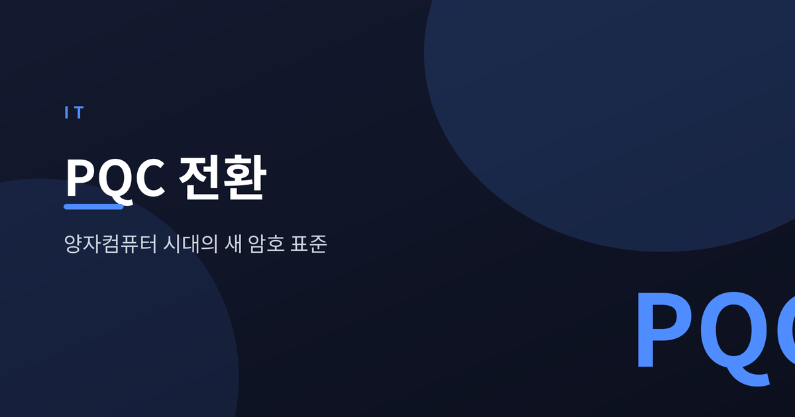
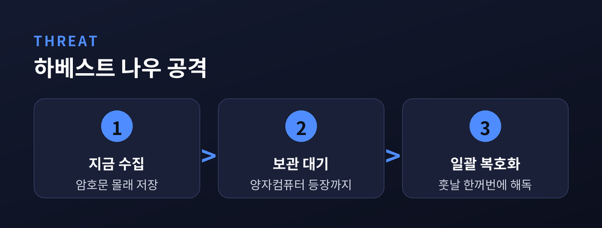
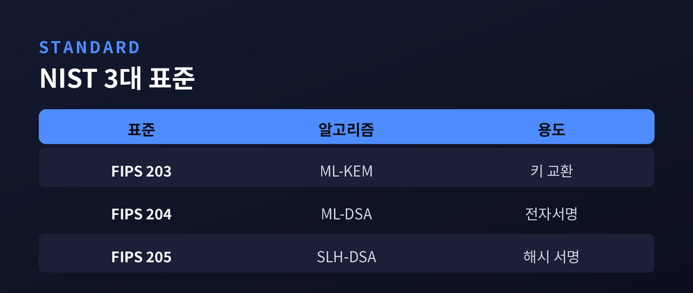
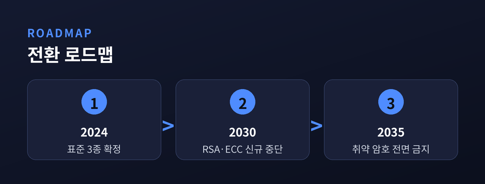

양자컴퓨터 시대에 대비하는 새 암호 표준

양자컴퓨터는 아직 우리 손에 없습니다. 하지만 암호업계는 이미 비상입니다. 오늘 안전하다고 믿는 암호가 내일 뚫릴 수 있기 때문입니다. 그래서 세계는 포스트 양자 암호(PQC)로 이동하고 있습니다.
문제의 핵심은 시간차입니다. 공격자는 지금 암호화된 데이터를 몰래 저장합니다. 그리고 강력한 양자컴퓨터가 나오는 날 한꺼번에 복호화합니다. 이를 하베스트 나우, 디크립트 레이터라고 부릅니다.
우리가 쓰는 RSA와 타원곡선 암호는 큰 수를 인수분해하기 어렵다는 전제 위에 서 있습니다. 그런데 양자컴퓨터는 쇼어 알고리즘으로 이 전제를 무너뜨립니다. 오늘 보낸 의료 기록, 국가 기밀, 금융 거래가 훗날 그대로 열릴 수 있다는 뜻입니다. 보관 기간이 긴 데이터일수록 위험은 오늘부터 시작됩니다.

2024년 8월, 미국 NIST가 첫 세 개의 정식 표준을 확정했습니다. 8년에 걸친 공모의 결실이었습니다.
FIPS 203(ML-KEM)은 키 교환을 담당합니다. 크리스털스-카이버가 이름을 바꾼 것입니다. 키가 작고 속도가 빨라 일반 암호화의 주력으로 쓰입니다. FIPS 204(ML-DSA)는 전자서명용 표준입니다. 크리스털스-딜리시움 기반입니다. FIPS 205(SLH-DSA)는 해시 기반 서명으로, 다른 방식이 흔들릴 때를 대비한 보험입니다.
예전엔 암호 하나면 충분했습니다. 지금은 기존 암호와 PQC를 겹쳐 쓰는 하이브리드 방식이 표준으로 자리 잡고 있습니다. 둘 중 하나가 뚫려도 나머지가 버티도록 하는 이중 잠금입니다.

표준만 나온 게 아닙니다. 현장은 벌써 움직였습니다.
크롬, 엣지, 파이어폭스는 하이브리드 키 교환을 기본 탑재했습니다. 클라우드플레어 통계로는 2026년 3월 기준 사람 트래픽의 60% 이상이 하이브리드 ML-KEM을 씁니다. 애플과 시그널은 메신저에 이미 양자 내성 암호를 넣었습니다.
일정도 명확해졌습니다. RSA-2048과 P-256은 2030년까지 신규 사용이 권장되지 않습니다. 2035년에는 양자 취약 알고리즘이 전면 금지됩니다. 다만 전환은 쉽지 않습니다. 키가 커져 성능 부담이 생기고, 오래된 장비는 교체가 필요합니다. 서두르되 검증을 거치는 균형이 필요합니다.

결국 질문은 "언제"가 아니라 "지금 무엇부터"입니다. 양자컴퓨터의 등장 시점은 아무도 모릅니다. 그러나 준비의 시작점은 오늘로 정해져 있습니다.